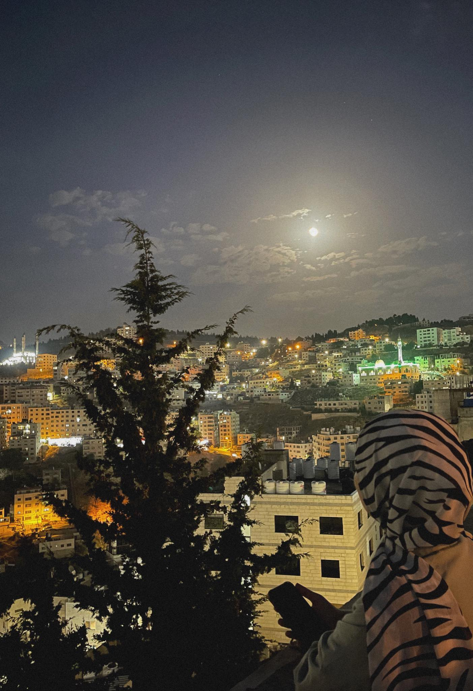

Good morning or evening, welcome to my personal definition page
I am Rama Bashar Anbousi from Palestine/Nablus, born on December 23, 2003. I study at Palestine Technical University - Kadoorie/Tulkarm, majoring in Computer Systems Engineering (fourth year). Since I was in school, I dreamed of this major due to my great love for computers, so I entered the industrial branch (Computer Maintenance) and achieved an average of 94.8, ranking tenth in the school. I participated in many free workshops launched by the Knowledge Academy over the past two years on various topics such as "How to Start Programming" and a workshop on UI/UX, among other workshops. I also took a course on Data Structures. At the university level, I was a member of the Computer Systems Club for computer science students. However, due to the circumstances we are going through, the education system has been switched to online, which somewhat reduced interactive activities and student engagement. God willing, victory is near for us, freedom for our prisoners, and an imminent relief. I have many hobbies, the most important of which is photography, and I have a public page on Instagram where I post my photos. I also have a hobby of reading; I have read many books and novels. Other hobbies include swimming, playing basketball, and chess. I used to have a hobby of writing, but I have neglected it for a long time, though I plan to get back to it soon.
This is what comes to my mind right now. thank you if you have read this far ♡︎.